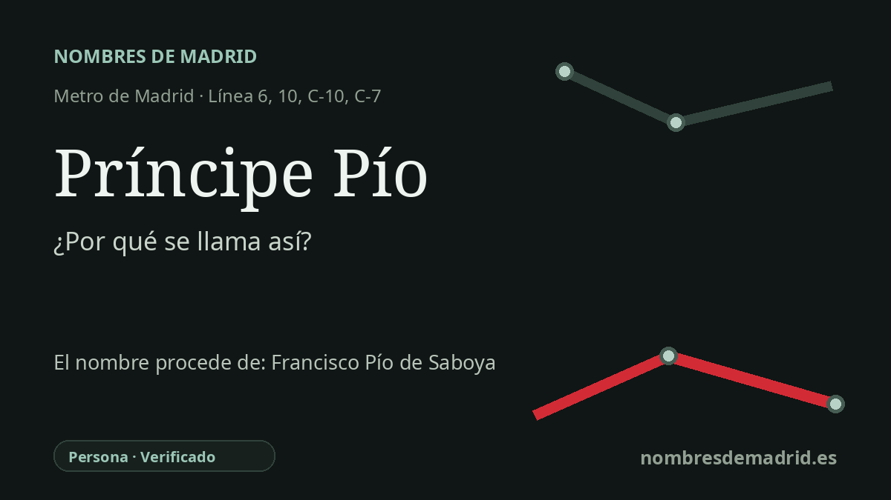

Publicado el · Investigación de Nombres de Madrid · Cómo verificamos cada origen · 11 fuentes consultadas
Respuesta rápida
Príncipe Pío recibe su nombre de la antigua posesión y montaña del Príncipe Pío, junto a la vieja Estación del Norte. Ese topónimo procede de Francisco Pío de Saboya y Moura, noble y militar de origen italiano al servicio de Felipe V.
La historia del nombre
La estación de Príncipe Pío se llama así por el lugar en el que se encuentra: la antigua posesión del Príncipe Pío y la cercana Montaña del Príncipe Pío. El nombre actual sustituyó al de Norte en diciembre de 1994, cuando la estación se estaba transformando en un intercambiador de Metro, Cercanías y autobuses. Desde el punto de vista etimológico, el nombre llega a la estación a través del paisaje urbano, pero ese topónimo procede de una persona.
Esa persona fue Francisco Pío de Saboya y Moura, fechado habitualmente como 1672-1723 en la documentación biográfica más sólida. Fue un aristócrata de origen italiano al servicio de la Corona española, príncipe de San Gregorio y marqués de Castel-Rodrigo, además de militar vinculado al bando de Felipe V durante y después de la Guerra de Sucesión. La posesión histórica asociada a su casa se situaba en este borde occidental de Madrid, cerca del Manzanares y de La Florida.
Antes del intercambiador moderno, el lugar estuvo marcado por la historia ferroviaria. La Estación del Norte recibió su nombre de la Compañía de los Ferrocarriles del Norte, que construyó en Madrid la cabecera de la línea hacia la frontera francesa. Una estación primitiva funcionaba ya desde junio de 1861; el edificio histórico actual fue inaugurado el 8 de julio de 1882. A finales del siglo XX, el papel de terminal de largo recorrido decayó y el enclave se reconvirtió en un gran nodo metropolitano.
El nombre conserva además una memoria urbana muy intensa, más allá de la antigua posesión aristocrática. La Montaña del Príncipe Pío fue uno de los lugares donde las tropas francesas fusilaron prisioneros tras el levantamiento del 2 de mayo de 1808. La ficha municipal del cementerio de la Florida identifica allí el enterramiento de cuarenta y tres víctimas, y el Museo del Prado conserva el gran lienzo de Goya conocido como El 3 de mayo de 1808 en Madrid o los fusilamientos en la Montaña del Príncipe Pío.
Por eso, la explicación más precisa es que el nombre de la estación es un topónimo histórico de origen personal. Es seguro vincular Príncipe Pío con Francisco Pío de Saboya y Moura y con la antigua posesión, pero es menos seguro afirmar que el cambio de 1994 pretendiera homenajear oficialmente toda la secuencia de memoria aristocrática, ferroviaria y antinapoleónica. Lo más exacto es decir que Norte pasó a llamarse Príncipe Pío al adoptar el topónimo local consolidado durante su conversión en intercambiador moderno.